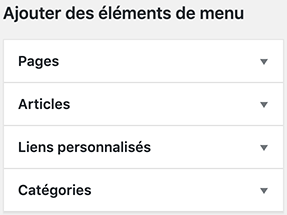
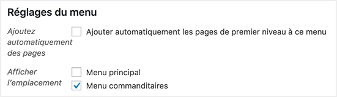

Le tableau de bord de WordPress permet de créer et gérer des menus de navigation sans aucune connaissance technique. Ainsi, si un client vous engage afin de concevoir un site, vous pouvez lui livrer et quelques années plus tard, ce dernier peut choisir de créer une nouvelle page et l'ajouter dans sa navigation par lui-même sans même avoir recours à vous ou un autre développeur.
Pour ce faire, WordPress n'a besoin que trois éléments:
- la déclaration du menu,
- où ce menu doit être affiché dans le code (donc dans la page),
- et que contient ce menu
Pour déclarer un menu, il faut ouvrir le fichier function.php et repérer la fonction register_nav_menus( ... ).
Dans cet exemple, il n'y a qu'un menu de déclaré.
main-menu nom de référence dans le code.
Menu principal nom affiché dans le tableau de bord.
Menu principal du site description affichée dans le tableau de bord.
Pour en déclarer un deuxième, il suffit d'ajouter une ligne à la suite de la première. Par exemple, si nous désirions créer un menu de commanditaires, il serait possible de faire:
Il faut ensuite indiquer l'endroit où ce menu peut être affiché. Pour ce faire, il faut aller dans un modèle ou partiel et ajouter un script permettant de l'inclure.
Par exemple, pour inclure le menu des commanditaires, il faudra faire:
Il faut maintenant créer un menu dans le tableau de bord. Pour ce faire, il faut aller dans:
Apparence ➡️ Menus
Et commencer par lui donner un nom
Ensuite, à partir du menu de gauche, il est possible de sélectionner les éléments qui devraient constituer le menu.
Dans la section de droite, il est possible de contrôler l'ordre des éléments, ainsi que d'ajuster certains réglages, mais surtout de sélectionner l'emplacement où affichera le menu.
Par défaut, les posts personnalisés ne sont pas disponibles dans les options de sélection de menus. Pour y avoir accès, il faut les activer via l'onglet "Option de l'écran" se trouvant en haut à droite de la page de Menus.
Par exemple, si un post personnalisé intitulé "produits" fut créé et que ses posts doivent-être disponibles dans les options de sélection de menus, il faut les activer ainsi: